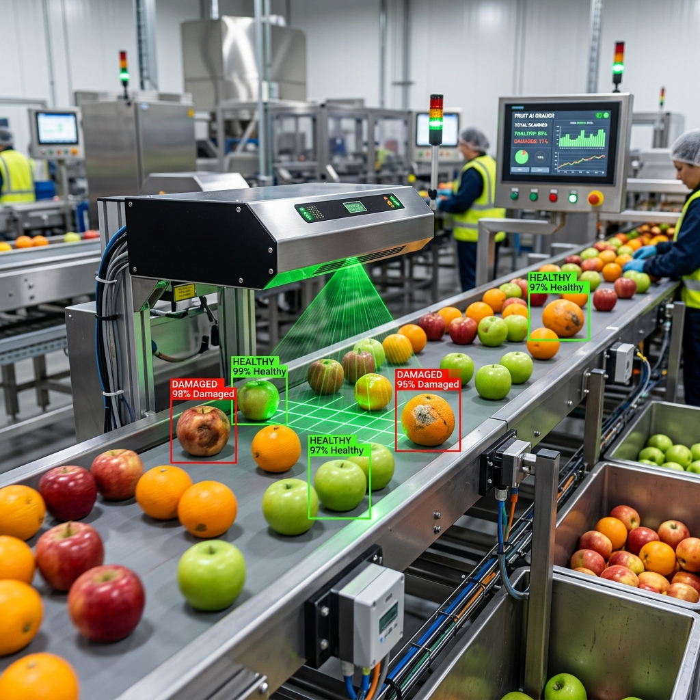
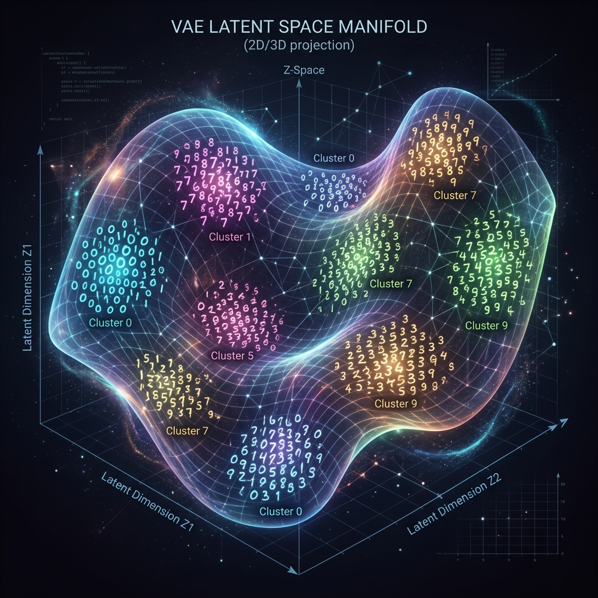
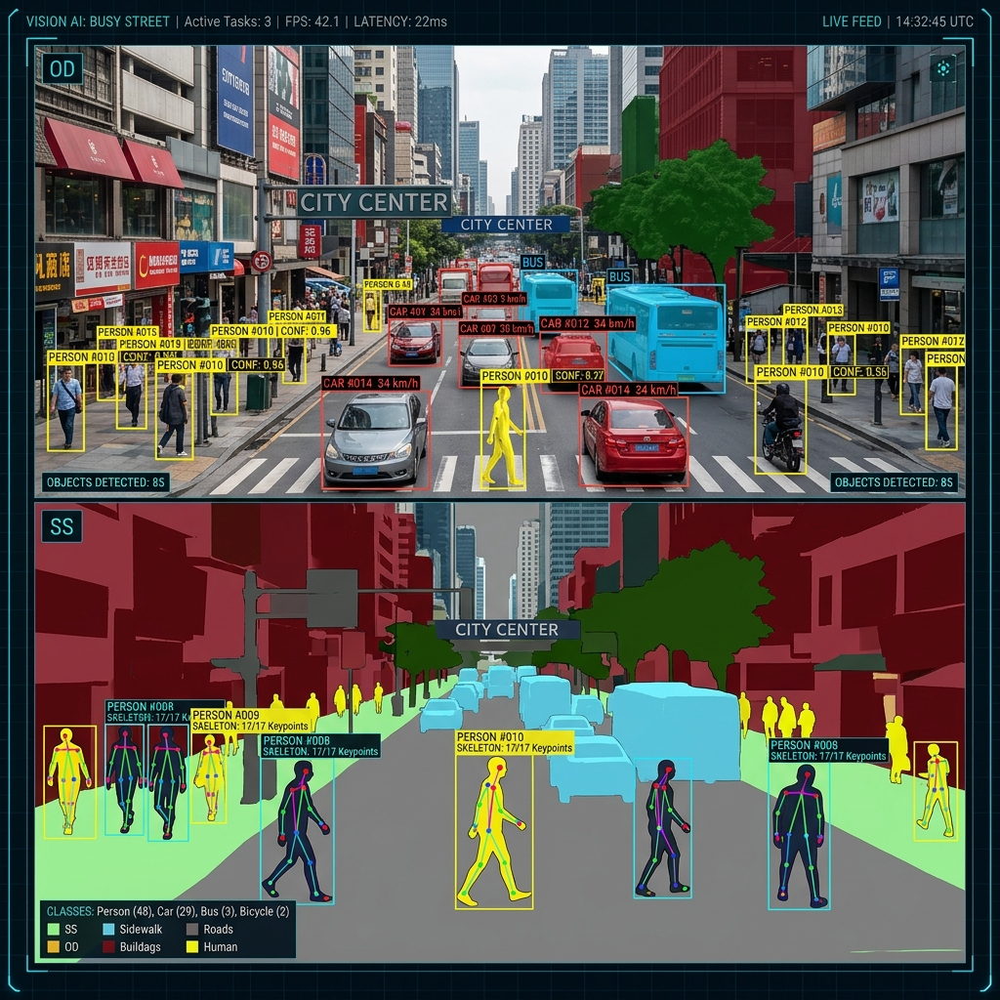
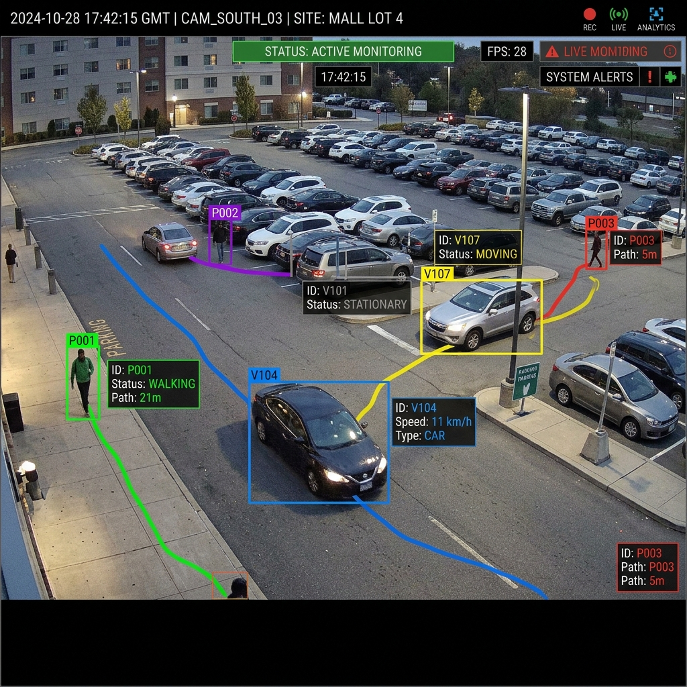
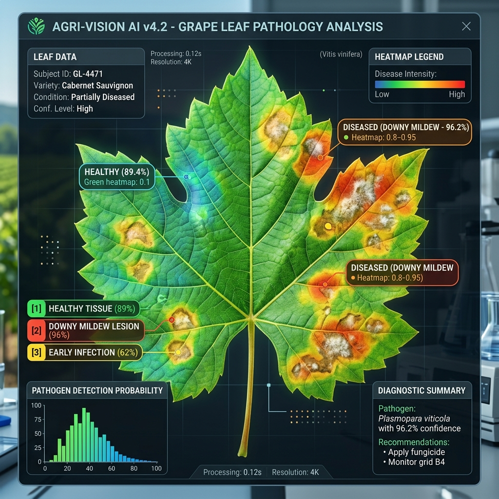

Neural networks, CNNs, and advanced architectures engineered for high-dimensional data processing.

Real-time fruit quality grading system. Multi-stage pipeline: detection (YOLOv8), classification (EfficientNet-B4), and size estimation — achieving sub-100ms inference.
Variational Autoencoder (VAE) implemented for synthetic digit generation. Explores the latent space representation of the MNIST dataset.


A unified pipeline for detection, classification, and segmentation using state-of-the-art models from the Hugging Face ecosystem.
Innovative system using hand tracking to launch applications and control desktop functions via real-time computer vision gestures.

Advanced multi-object tracking system combining detection with deep association metrics for robust object persistence across frames.
Automated classification of grape leaves into healthy or diseased categories using a fine-tuned ResNet50 architecture.

High-speed object detection implementation optimized for webcam inference and edge deployment.